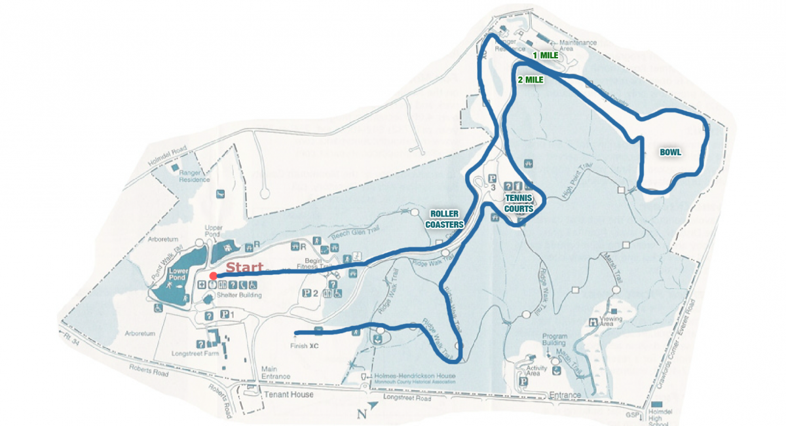

Holmdel Park
To be honest, both cross country and track and their pros and cons; however, cross country definitely has the best courses.
A little background before I go into them though. Almost every year, my family and I go to Maine. If you have ever been there you know just
how cool their trails are, but if you haven't been there you totally need to go. Getting back on track, the only way to describe the first cross
country course is like hiking in Maine. Holmdel Park is one of the hardest cross country courses in the country and lucky for me, I go there
every Sunday in the summer for practice and about 3 times for meets throughout the year. Every Sunday my team and I run the course to get used to
the COUNTLESS hills, the rough terrain, and distance. The Holmdel Park course is about 3.2 miles and is an incredibly nice park. I only wish
the drive was shorter(haha). This course is extremely scenic, but don't let that fool you. Ranked as one of the hardest courses in the country,
the Holmdel Park course contains so many hills and most important, a section called the bowl. The bowl is a section where it is a huge circle
where the first half is completely downhill (and rocky) and the second half if a VERY STEEP uphill. But that is nothing compared to the last
100 meters of the bowl where it is almost to steep to even run up. Numerous people actually WALK up the end of the bowl because they are not
used to hills. And I don't know if this is just me, but I absolutely hate it when people start to walk during a race, but this is why my
team and I go to Holmdel every Sunday. To practice the hils. If you don't run hills all season and then you go to Holmdel... well, your
time will change. So I suggest practicing at Holmdel if you know that you have a race coming up there; however, be very careful because the
terrain is hard to navigate. For example, just last week I tripped on a root during a very steep downhill and totally fell. This can ruin
your season if you are not careful. All in all, Holmdel is a beautiful, but difficult course.
